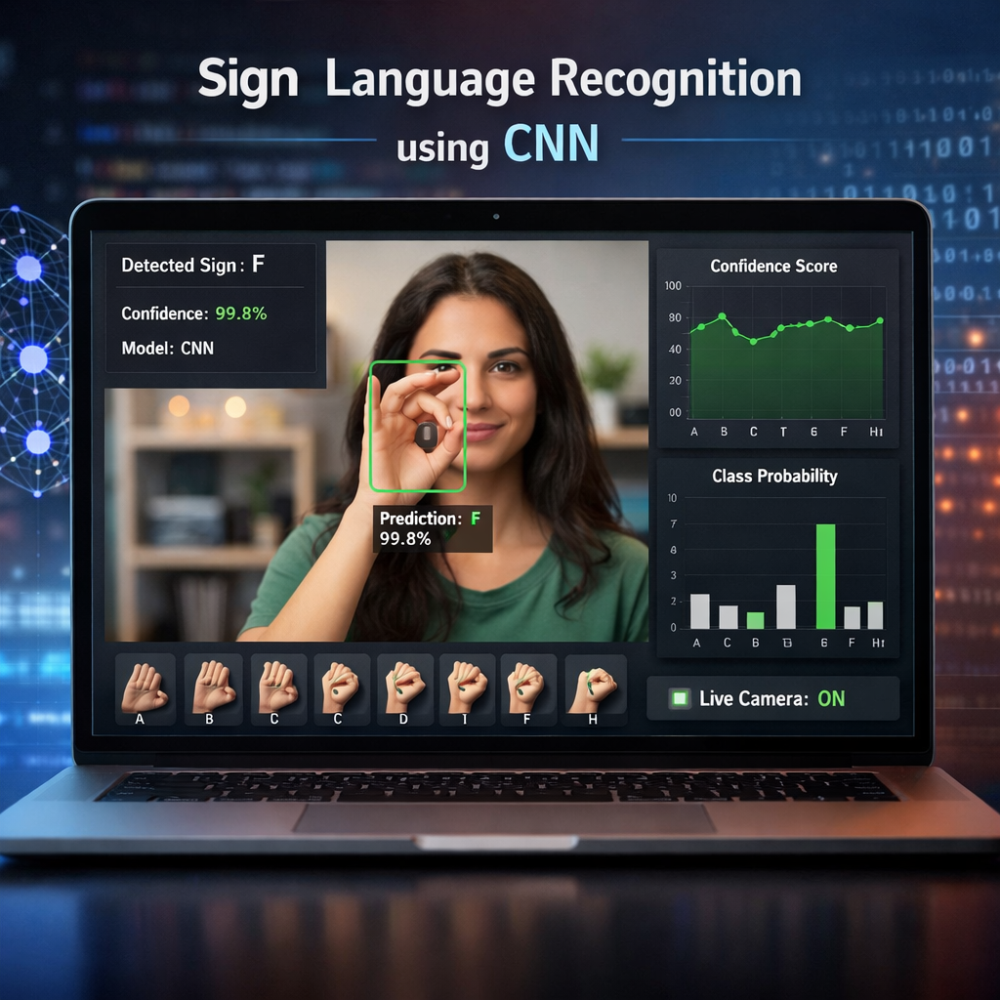
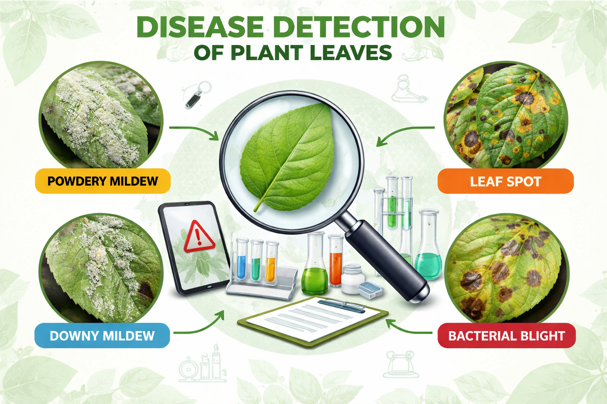
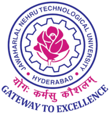

Grocery Store Management System
Full-stack inventory, orders, and user management system with role-based access control and secure REST APIs.
Software Development Engineer | Backend & Systems Focused
I’m a Software Development Engineer with experience building scalable backend systems, automating workflows using Python, and optimizing distributed environments for reliability and performance. I focus on designing efficient, secure, and production-ready applications with strong fundamentals in data structures, APIs, system troubleshooting, and enterprise-level infrastructure. I’ve implemented data-driven solutions that reduced system failures by 90% and improved operational efficiency through root cause analysis and intelligent automation. Passionate about writing clean, maintainable code and building systems that scale.
Secure APIs · Scalable Systems
AWS/Azure · Serverless · CI/CD
Backend + Full Stack Delivery
Building scalable, secure, and intelligent systems powered by automation and data-driven engineering.
Selected projects showing full-stack, cloud, and ML work.
Full-stack inventory, orders, and user management system with role-based access control and secure REST APIs.

Real-time ASL gesture recognition using CNNs, achieving 92% accuracy and improving accessibility.

Leaf disease detection with 94% validation accuracy and a serverless inference workflow.
Switch modes to highlight the most relevant skills.
Impact-focused highlights.
Academic background.

Let’s connect.